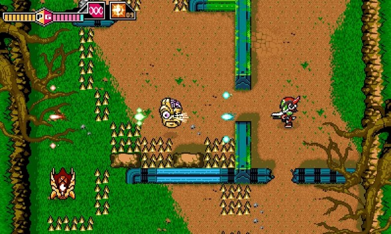
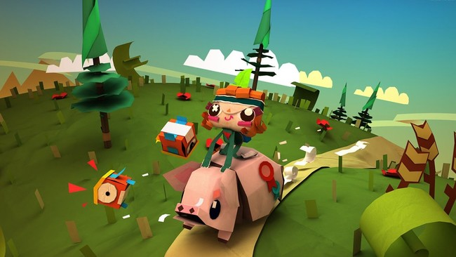

Últimas noticias
BLASTER MASTER ZERO NOS TRANSMITE UN GRAN SENTIMIENTO DE NOSTALGIA CON SU GAMEPLAY DE 16 MINUTOS
Nintendo dejó claro ayer en su último Nintendo Direct que se avecina una buena oleada de indies a Nintendo Switch, unos más espectaculares que otros, pero personalmente uno de los que más me llamó la atención fue 'Blaster Master Zero', una remasterización del clásico de NES que llegará a la nueva consola de sobremesa y a Nintendo 3DS. El portal Polygon ha tenido la suerte de probar a fondo el juego y prueba de ello es el gameplay de 16 minutos que ha publicado y que muestra claramente como su jugabilidad permanecerá intacta con esos niveles en 2D que deberemos recorrer en nuestro vehículo y otros que podremos recorrer a pie desde un punto de vista cenital.
COMPARAMOS LAS CARACTERÍSTICAS DE PS4, PS3 Y XBOX ONE
| Consola | Precio | CPU | Dimensiones (cm) | RAM | Audio/MP3 |
|---|---|---|---|---|---|
| Play Station 4 | 300€ | Un único procesador x86 AMD Jaguar de 8 núcleos | 30,5 largo; 27,5 ancho; 5,3 alto | 8GB GDDR5 | No |
| XBOX | 499€ | Procesador x86 de 8 núcleos personalizado Microsoft | 33,3 largo; 27,4 ancho; 7,9 alto | 8GB DDR3 | Sí |
| Play Station 3 | 179.99€ | Cell Broadband Engine 3,2 GHz con 1PPE y 8 SPEs | 43,5 de largo; 17 de ancho;33,5 de alto | 256 MB de RAM de tipo GDDR3 | Sí |
Hemos querido traeros una tabla comparativa para poner un poco de orden entre tanta información que nos llega sobre PS4, PS3 y Xbox One y ver así qué máquina "sale ganando" en cada apartado. A falta de menos de un mes para el lanzamiento de la nueva generación, Sony y Microsoft están mostrando los últimos detalles de sus dos nuevos retoños. La compañía japonesa ha comentado que el primer día su máquina necesitará poner a punto varias características, como la emisión de las partidas por Internet o el reconocimiento de voz. Todo llegará en una actualización que estará disponible desde el día uno. Por el lado de Microsoft, la empresa norteamericana está basando sus últimos esfuerzos a explicarnos varias de las funciones de Xbox One. Por ejemplo, SmartGlass, un vídeo donde podemos la interfaz de la consola o cómo serán los logros personalizables de la máquina.
TEARWAY UNFOLDED Y DISC JAM ENTRE LAS PROPUESTAS JUGABLES DE MARZO PARA LOS SUSCRIPTORES DE PS PLUS
Aunque los dos platos fuertes de PS4 se habían filtrado algunos días antes, Sony hace oficiales los juegos que afianzarán la propuesta jugable de los suscriptores de PlayStation Plus: el desenfadado plataformas 'Tearaway Unfolded ' y 'Disc Jam', una versión alternativa del clásico 'Windjammers' serán dos de las grandes apuestas de este mes, aunque no las únicas. Junto a los juegos anteriores, y gracias al programa de Cross-Play y Cross-Buy con PS Vita, los usuarios de PS4 recibirán la aventura en perspectiva isométrica 'Lumo' de Rising Star Games. Por su parte, aquellos suscriptores de PlayStation Plus que dispongan de la portátil de Sony además podrán descargar sin coste el RPG en primera persona 'Severed' de Drinkbox Studios .